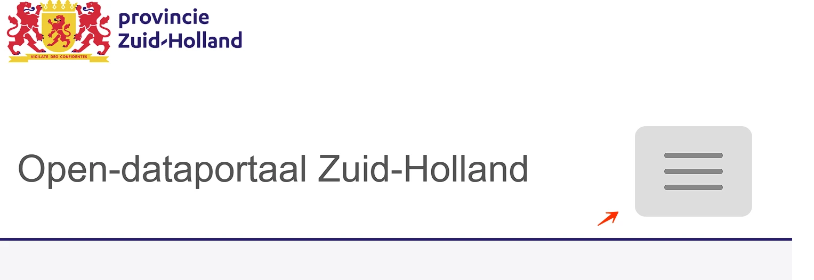
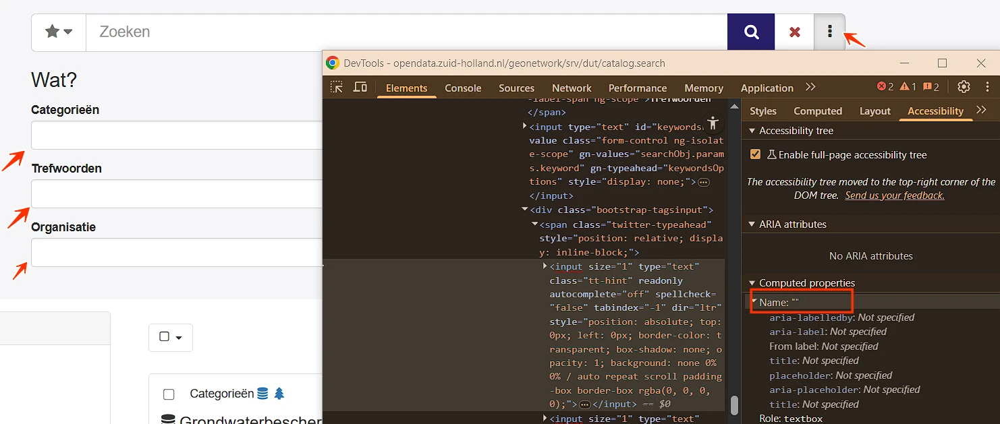
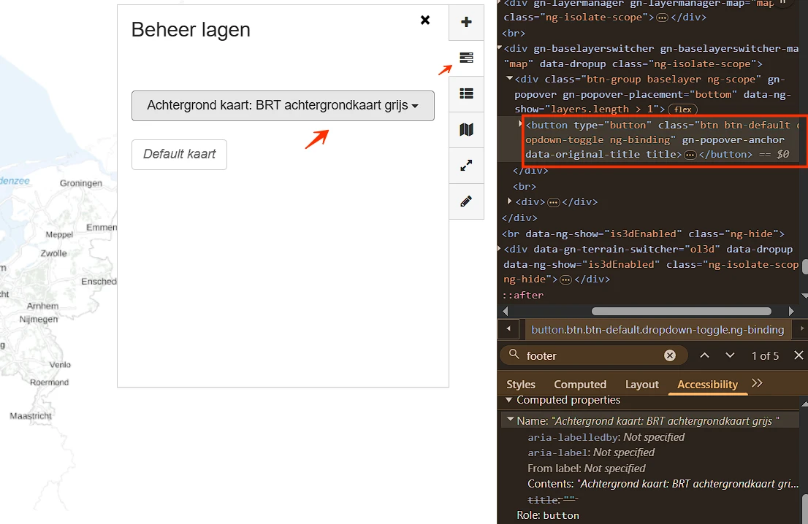
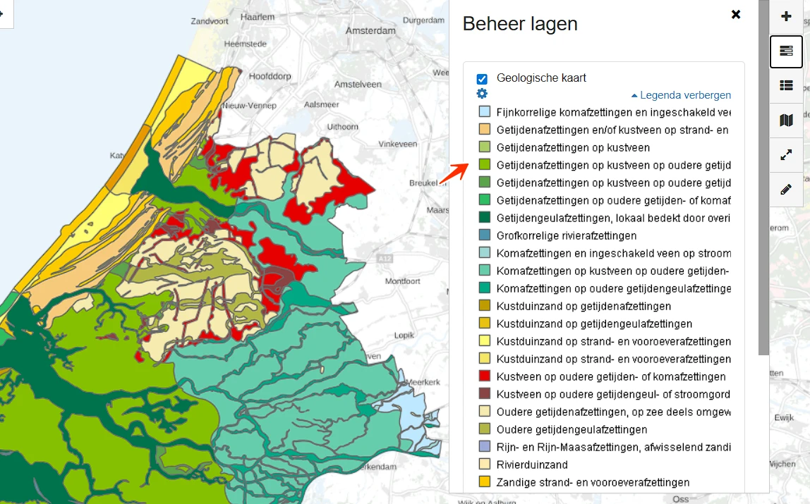
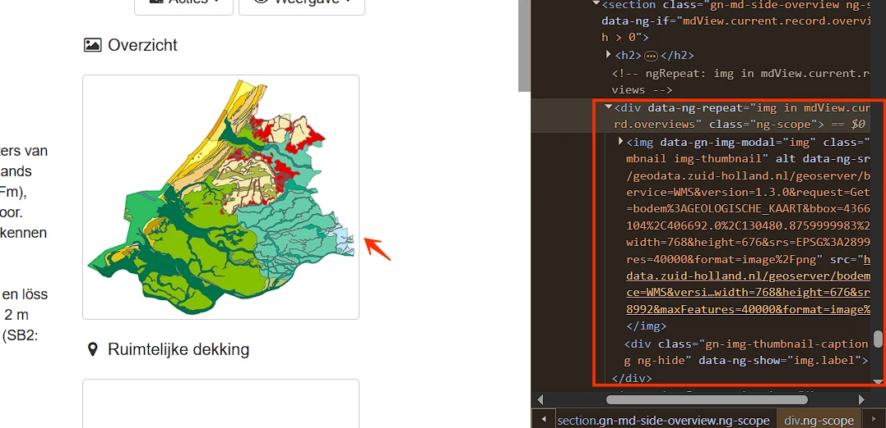
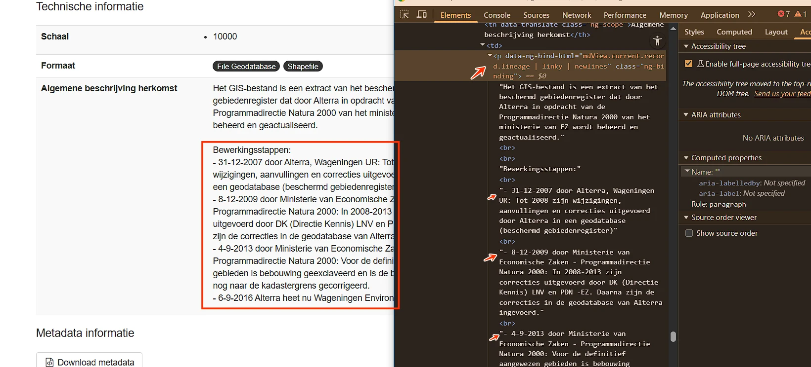
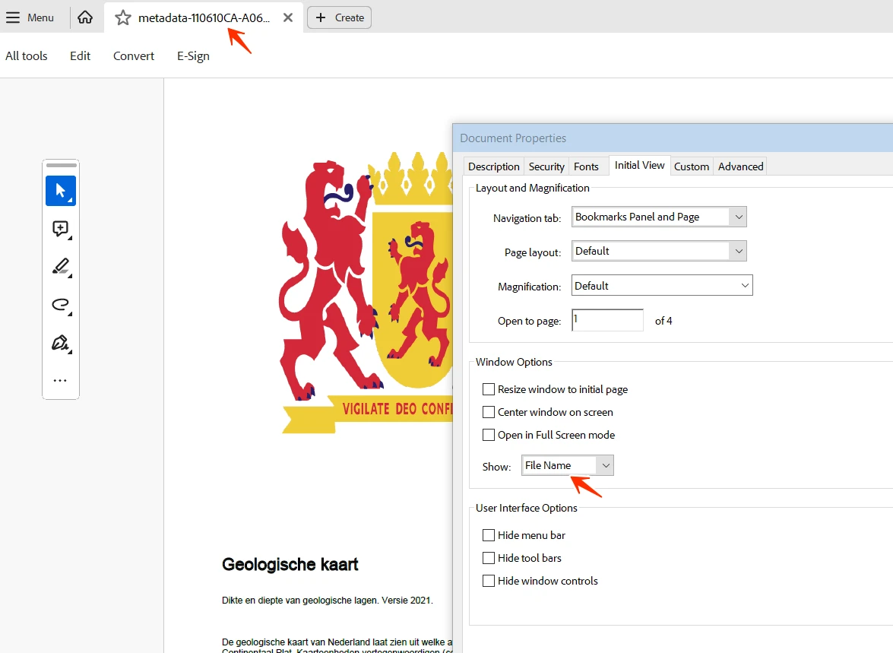

Audit digitale toegankelijkheid van website opendata.zuid-holland.nl
Samenvatting
Wij hebben de website opendata.zuid-holland.nl onderzocht tussen 23 april en 7 mei 2026. In dit rapport lees je welke punten verbetering behoeven en hoe deze kunnen worden aangepakt.
Het onderzoek richt zich op zowel de techniek als de content van de website.
#1 - De lijst met suggesties is niet toegankelijk voor een schermlezer
Impact: GrootType: TechniekWCAG: 4.1.2EN: 9.4.1.2
In de zoekbalk verschijnen tijdens het typen suggesties in een uitklaplijst. Deze interactie hoort bij een combobox, maar de bijbehorende rol ontbreekt op het invoerveld. Een schermlezer kan daardoor niet aankondigen dat het om een combobox gaat en dat er suggesties zijn.
User story
Als bezoeker die een zoekbalk met automatische suggesties gebruikt met een schermlezer, heb ik nodig dat het invoerveld role="combobox" krijgt, samen met aria-expanded, aria-controls en de andere attributen die het combobox-pattern vraagt — want nu verschijnt de suggestielijst alleen visueel, en mijn schermlezer kan op geen enkele manier herkennen dat het invoerveld een combobox is.
Oplossing
Om deze zoekbalk toegankelijk te maken als combobox, voeg role="combobox" toe aan het invoerveld om aan te geven dat het een combobox is.
In de header zijn het logo en de links "Zoeken" en "Kaart" geplaatst in een container met role="menu". Deze container volgt het ARIA-menu-pattern niet: de juiste child-rollen zoals menuitem ontbreken en de bijbehorende toetsenbordafhandeling wordt niet geïmplementeerd.
De rol menu is bedoeld voor menu's met een specifiek interactiepatroon, vergelijkbaar met menu's in desktopapplicaties. Voor reguliere websitenavigatie is deze rol niet geschikt. Het gebruik ervan op deze plek geeft hulpsoftware verkeerde semantiek en kan tot verwarring leiden.
User story
Als bezoeker die navigeert met een schermlezer of toetsenbord, heb ik nodig dat navigatie-elementen de juiste semantiek hebben, zodat ik begrijp hoe ik ermee om kan gaan. Wanneer een gewone navigatie wordt aangeboden als een menu, terwijl het zich niet als een menu gedraagt, verwacht ik menu-interacties die hier niet werken — en dat maakt de navigatie verwarrend.
Oplossing
Verwijder role="menu" en gebruik semantische HTML voor de navigatie, bijvoorbeeld een <nav>-element met links.
In de header staan list-item-elementen (<li>), zoals de links "Zoeken" en "Kaart", die niet zijn ondergebracht in een lijstcontainer (<ul> of <ol>).
Hierdoor breekt de semantische relatie tussen list-items en hun bovenliggende lijst. Hulpsoftware kan de inhoud daardoor niet correct als een lijst herkennen.
User story
Als gebruiker van een schermlezer heb ik nodig dat list-items netjes binnen een lijst staan, zodat ik de structuur begrijp en de items als geheel kan doorlopen. Zonder een correcte lijstcontainer hoor ik niet dat deze links bij elkaar horen.
Oplossing
Zorg dat alle <li>-elementen binnen een geschikte lijstcontainer (<ul> of <ol>) staan, zodat de lijststructuur correct wordt overgebracht.
#4 - Herhalende content niet te omzeilen
Impact: GrootType: TechniekWCAG: 2.4.1EN: 9.2.4.1
Op deze pagina ontbreekt een manier om herhalende contentblokken over te slaan. Er is geen skiplink, er zijn geen landmarks, en de koppenstructuur is niet zo opgezet dat deze als alternatief voor een werkende skiplink kan dienen.
User story
Als bezoeker die navigeert met het toetsenbord, met een schermlezer, met spraakbesturing of met een schakelapparaat, heb ik nodig dat elke pagina ten minste één manier biedt om de terugkerende navigatie, header en andere gedeelde blokken over te slaan — een werkende skiplink, echte nav/main-landmarks, of een goede koppenstructuur — want nu moet ik op iedere pagina opnieuw langs dezelfde menu-items, mijn schermlezer heeft geen landmarks om naartoe te springen, en de enige manier om de hoofdinhoud te bereiken is door de navigatie steeds opnieuw door te lopen.
Oplossing
Een van de volgende oplossingen kan worden toegepast:
Een werkende skiplink (deze oplossing is geschikt voor alle gebruikers).
Landmarks.
Een correcte koppenstructuur.
#5 - Kleur is gebruikt om toetsenbordfocus aan te geven
Impact: GrootType: TechniekWCAG: 1.4.1EN: 9.1.4.1

Op het kleine scherm staat een mobiele menuknop. Deze knop heeft toetsenbordfocus, maar dat is alleen te zien aan een verandering van de achtergrondkleur van wit naar lichtgrijs.
Dat is niet voldoende: voor bezoekers met een visuele beperking, kleurenblindheid of een hoog-contrastthema is zo'n subtiele kleurverschuiving moeilijk waarneembaar.
User story
Als bezoeker die met het toetsenbord navigeert, kleurenblind ben, slechtziend ben, of een hoog-contrastthema gebruik, heb ik nodig dat elke focusindicator op deze pagina meer gebruikt dan alleen kleur — een outline, een rand, een onderstreping of een duidelijke vormverandering — want nu wordt focus alleen aangegeven met een kleurverschuiving van minder dan 3:1 contrast tussen de twee staten, mijn ogen pikken die kleine verschuiving niet op, en ik raak het spoor van de toetsenbordfocus kwijt.
Oplossing
Verbeter de zichtbaarheid van de toetsenbordfocus door naast de kleurverandering een extra visueel element toe te voegen. Denk aan een dikkere rand, een onderstreping, een duidelijker achtergrondverandering of een icoon. Zo is voor iedereen, ongeacht visuele mogelijkheden, te zien waar de focus zich bevindt.
Het zoekveld heeft grijze (#C9C9C9) randen op een lichtgrijze (#F5F5F7) achtergrond. De contrastverhouding is 1,5:1.
Als alternatief zou een placeholdertekst kunnen dienen, maar ook die heeft onvoldoende contrast met de achtergrond.
User story
Als bezoeker die slechtziend is, leeftijdsgerelateerd contrastverlies heeft, of een scherm in fel zonlicht gebruikt, heb ik nodig dat de rand van elk invoerveld minimaal 3:1 contrast heeft met de paginakleur — want de rand vertelt mij "dit is een veld waarin je kunt typen", en een rand die ik niet zie levert mij een onzichtbaar formulierveld op dat ik gewoon over het hoofd zie.
Oplossing
Dit voldoet niet aan de minimale contrasteis van 3,0:1 voor de rand van invoervelden ten opzichte van de aangrenzende vlakken. Onvoldoende contrast maakt de begrenzing van het invoerveld moeilijk waarneembaar en beperkt de bruikbaarheid.
#7 - Meerdere pagina's hebben dezelfde paginatitel
Impact: MediumType: ContentWCAG: 2.4.2EN: 9.2.4.2
Alle pagina's hebben dezelfde tekst in het <title>-element: "Open-dataportaal Zuid-Holland".
Elke pagina hoort een unieke en beschrijvende titel te hebben. Dezelfde paginatitels overal kunnen verwarrend zijn, en maken het vooral lastig om te navigeren via tabbladen, browsergeschiedenis of bookmarks.
User story
Als bezoeker die navigeert met een schermlezer, meerdere browsertabbladen open heeft, mijn browsergeschiedenis doorbladert of pagina's bookmarked, heb ik nodig dat elke pagina op de site een unieke title heeft die de eigen inhoud beschrijft — want nu hebben alle pagina's dezelfde titel, mijn schermlezer kondigt steeds dezelfde woorden aan, mijn tabbladen zijn niet uit elkaar te houden, en geschiedenis en bookmarks geven rij na rij dezelfde naam voor verschillende pagina's.
Oplossing
Pas het <title>-element zo aan dat elke pagina een unieke en informatieve titel krijgt die de inhoud nauwkeurig weergeeft.
Onder de sectie met thema's zijn de tabs gemaakt met een onjuiste ARIA-structuur. Een element met role="tablist" bevat niet de verwachte child-elementen (role="tab"). In plaats daarvan zit er nog een element met role="tablist" in.
Dit verbreekt de vereiste relatie tussen ouder en kind voor tabs en kan voorkomen dat hulpsoftware de tab-interface correct herkent en bedient.
User story
Als gebruiker van een schermlezer of toetsenbord heb ik nodig dat tabs goed gestructureerd zijn, zodat ik de relatie tussen tablist, tabs en bijbehorende panelen begrijp en met de standaard toetsenbordcombinaties tussen tabs kan wisselen.
Oplossing
Zorg dat een tablist alleen elementen met role="tab" als directe kinderen bevat, en dat elke tab gekoppeld is aan het bijbehorende tab-panel.
Onder de tabs staan artikelen die elk twee aparte links naar dezelfde bestemming bevatten.
Meerdere links met dezelfde bestemming binnen hetzelfde contentblok zijn overbodig en kunnen onnodige uitvoerigheid opleveren voor gebruikers van een schermlezer.
User story
Als gebruiker van een schermlezer of toetsenbord heb ik nodig dat elk artikel één duidelijke link naar de bestemming bevat, zodat ik niet steeds dubbele links tegenkom die het navigeren onnodig vertragen.
Oplossing
Combineer de links in één link per artikel — bijvoorbeeld door het hele artikel als link te markeren of de klikbare elementen te bundelen — zodat bezoekers niet meerdere navigatieopties met hetzelfde doel zien.
Onder de tabs staan artikelen die elk twee links naar dezelfde bestemming bevatten. De tweede link heeft een veel te lange toegankelijke naam, bijvoorbeeld:
"Deze laag wordt gebruikt voor de IC-Desk applicatie om te bepalen in welke regio (Noord, Zuid, Oost, West, Vaarwegen) een storing/incident plaatsvindt. Vanuit de IC-Desk applicatie wordt de service op deze laag eenmaal daags bevraagd om de geometrie van de regio's op te halen."
Linkteksten horen kort en duidelijk te zijn. Lange, uitgebreide linknamen zijn moeilijk te scannen en te navigeren, vooral voor gebruikers van een schermlezer die met een lijst van links werken.
User story
Als gebruiker van een schermlezer die door links navigeert, heb ik nodig dat linknamen kort, duidelijk en betekenisvol zijn, zodat ik snel begrijp waar elke link naartoe leidt. Bij lange, uitgebreide linkteksten wordt scannen lastig en navigeren traag.
Oplossing
Maak de linktekst beknopt en passend bij de bestemming. Verplaats lange beschrijvingen naar de begeleidende tekst of de doelpagina, in plaats van ze in de toegankelijke naam van de link op te nemen.
#11 - Toetsenbordfocus is niet zichtbaar
Impact: GrootType: TechniekWCAG: 2.4.7EN: 9.2.4.7
Onder de tabs staan artikelen met elk twee links. De tweede link heeft geen zichtbare toetsenbordfocus.
User story
Als bezoeker die met het toetsenbord, met een schermvergroter of met een visuele beperking navigeert, heb ik nodig dat elk interactief element op elke pagina een duidelijk zichtbare focusindicator heeft — de standaard van de browser of een aangepaste vervanging — want nu is de standaard focusstijl verwijderd zonder vervanging, mijn toetsenbordnavigatie verloopt blind, en ik weet niet waar ik me op de pagina bevind tussen twee tab-aanslagen.
Oplossing
Zorg dat elk interactief element een duidelijk zichtbare focusindicator heeft tijdens toetsenbordnavigatie. Gebruik CSS met de :focus- of :focus-visible-pseudo-class om een zichtbare outline toe te voegen, bijvoorbeeld:
Wanneer deze pagina op een schermresolutie van 1280 bij 1024 pixels wordt bekeken en 400% wordt ingezoomd, overlappen de links met thema's elkaar en zijn ze deels niet meer zichtbaar.
Inzoomen tot 400% mag de leesbaarheid van een informatief element niet aantasten.
User story
Als slechtziende bezoeker die de pagina op een 1280×1024-scherm tot 400% inzoomt (effectief een viewport van 320px), heb ik nodig dat alle tekst zichtbaar blijft — niet wordt afgeknipt, verborgen, of buiten de viewport geduwd — want nu verdwijnt door inzoomen een deel van de tekst, het hulpmiddel waarmee ik de pagina lees neemt de woorden weg, en wat ik niet zie kan ik niet teruglezen.
Oplossing
Zorg dat alles werkt en leesbaar blijft als je inzoomt tot 400% op een scherm van 1280 bij 1024 pixels.
Naast het zoekveld staat een knop met een drie-punten-icoon. Deze knop opent en sluit de aanvullende zoekinstellingen, maar dat is in de code niet aangegeven.
Als bezoeker die navigeert met een schermlezer, heb ik nodig dat elke knop die extra content opent en sluit aria-expanded (true/false) heeft — want nu kan mijn schermlezer niet aankondigen dat de knop extra content opent of dat die content op dit moment open is, en ik druk op de knop zonder te weten welk soort overlay er gaat verschijnen.
Oplossing
Het aria-expanded-attribuut kan worden gebruikt om de status aan te geven. Zet aria-expanded="true" als de extra content open is, en aria-expanded="false" als die gesloten is. Dit werkt alleen betrouwbaar als de focus op de knop blijft. Verschuift de focus weg van de knop terwijl de content open is, gebruik dan visueel verborgen tekst om de status van de content aan te geven. Werk die tekst dynamisch bij wanneer de status verandert.
#14 - Invoerveld heeft geen toegankelijke naam
Impact: GrootType: TechniekWCAG: 4.1.2EN: 9.4.1.2

Naast het zoekveld staat een knop met een drie-punten-icoon. Deze knop opent extra zoekinstellingen met invoervelden. Alle invoervelden onder de kop "Wat?" hebben geen toegankelijke naam. Daardoor kunnen blinde of slechtziende bezoekers die een schermlezer gebruiken niet horen waar het veld voor bedoeld is. Elk invoerveld heeft een toegankelijke naam nodig die de functie helder beschrijft.
User story
Als bezoeker die formulieren invult met een schermlezer, met spraakbesturing of met andere hulpsoftware, heb ik nodig dat elk formulierveld een toegankelijke naam heeft die beschrijft wat ik moet invullen — via een echt label-element, aria-label of aria-labelledby — want nu heeft dit veld geen naam, mijn schermlezer kondigt alleen "tekstveld" of "keuzelijst" aan, mijn spraakcommando heeft niets om op te richten, en ik weet niet wat ik moet typen.
Oplossing
Geef het invoerveld een toegankelijke naam met een label-element, aria-label of aria-labelledby.
#15 - De lijst met suggesties is niet toegankelijk voor een schermlezer
Impact: GrootType: TechniekWCAG: 4.1.2EN: 9.4.1.2
Naast het zoekveld staat een knop met een drie-punten-icoon. Deze knop opent extra zoekinstellingen met invoervelden die tijdens het typen suggesties tonen in een uitklaplijst. Deze interactie hoort bij een combobox, maar de bijbehorende rollen ontbreken op de invoervelden.
User story
Als bezoeker die invoervelden met automatische suggesties gebruikt met een schermlezer, heb ik nodig dat het invoerveld role="combobox" krijgt, samen met aria-expanded, aria-controls en de andere attributen die het combobox-pattern vraagt — want nu verschijnt de suggestielijst alleen visueel; mijn schermlezer kan niet herkennen dat het invoerveld een combobox is, dat suggesties open zijn, of hoeveel het er zijn.
Oplossing
Om deze invoervelden toegankelijk te maken als combobox, voeg in elk geval het volgende toe:
role="combobox": voeg dit attribuut toe aan het invoerveld om aan te geven dat het een combobox is.
aria-expanded: voeg dit attribuut toe om de status van de suggestielijst aan te geven. Zet aria-expanded="true" als de lijst zichtbaar is en aria-expanded="false" als die verborgen is.
Naast het zoekveld staat een knop met een drie-punten-icoon. Deze knop opent extra zoekinstellingen met datumvelden met placeholdertekst "Van" en "Tot". Deze velden hebben geen blijvend zichtbaar label; de placeholdertekst wordt als label gebruikt.
Naast deze datumvelden staan kalendericoontjes, maar daaruit is niet op te maken welk veld de begindatum is en welk de einddatum.
Invoervelden hebben labels nodig die altijd zichtbaar zijn. Placeholdertekst kan die rol niet vervullen, omdat die verdwijnt zodra de bezoeker begint te typen. Een blijvend zichtbaar label is nodig.
User story
Als bezoeker die formulieren invult met een schermlezer, met cognitieve beperkingen, of die wil terugkijken wat hij heeft ingevuld, heb ik nodig dat elk invoerveld een blijvend zichtbaar label heeft — placeholdertekst alleen is niet genoeg — want de placeholder verdwijnt zodra ik begin te typen, ik kan dan niet meer zien waar het veld voor was, en controleren of corrigeren wordt onmogelijk.
Oplossing
Voeg een blijvend zichtbaar label toe aan het invoerveld.
#17 - Kleurcontrast tekst en achtergrond is minder dan 4,5:1
Naast het zoekveld staat een knop met een drie-punten-icoon. Deze knop opent extra zoekinstellingen met blauwe (#3277B3) tekst op een lichtgrijze (#F5F5F7) achtergrond, zoals "Bronnen aangemaakt in de laatste". De contrastverhouding is te laag: 4,4:1.
User story
Als bezoeker die slechtziend is, leeftijdsgerelateerd contrastverlies heeft, of een scherm in fel zonlicht gebruikt, heb ik nodig dat tekst kleiner dan 24px en niet-vetgedrukt minimaal 4,5:1 contrast heeft met de achtergrond — want deze tekst valt onder de standaard contrasteis en de gebruikte kleuren zakken eronder, met als gevolg lopende tekst die ik moet ontcijferen of waar ik overheen lees.
Oplossing
Deze tekst is kleiner dan 24px en niet vetgedrukt, dus het contrast hoort minimaal 4,5:1 te zijn.
Naast het zoekveld staat een knop met een drie-punten-icoon. Deze knop opent extra zoekinstellingen met invoervelden. De grijze (#C9C9C9) randen van de invoervelden hebben op een lichtgrijze (#F5F5F7) achtergrond een te lage contrastverhouding: 1,5:1. Een placeholder zou een alternatief kunnen zijn, maar ook die heeft onvoldoende contrast met de achtergrond.
Als bezoeker die slechtziend is, leeftijdsgerelateerd contrastverlies heeft, of een scherm in fel zonlicht gebruikt, heb ik nodig dat de rand van elk invoerveld minimaal 3:1 contrast heeft met de paginakleur — want de rand vertelt mij "dit is een veld waarin je kunt typen", en een rand die ik niet zie levert mij een onzichtbaar formulierveld op dat ik gewoon over het hoofd zie.
Oplossing
Dit voldoet niet aan de minimale contrasteis van 3,0:1 voor de rand van invoervelden ten opzichte van de aangrenzende vlakken. Onvoldoende contrast maakt de begrenzing van het invoerveld moeilijk waarneembaar en beperkt de bruikbaarheid.
#19 - Rol en status van accordion-knop ontbreken
Impact: GrootType: TechniekWCAG: 4.1.2EN: 9.4.1.2
In de zijbalk staat een sectie met verborgen content, "Filter", die extra content uit- en inklapt. Het element dat de verborgen content opent en sluit, mist de rol van knop. Gebruikers van een schermlezer kunnen niet herkennen dat het element bedienbaar is. Zonder de juiste rol kondigt hulpsoftware het element niet als knop aan, waardoor de accordion onbruikbaar wordt voor deze groep. Ook de open- of gesloten-status is wel visueel te zien, maar wordt programmatisch niet doorgegeven aan schermlezers.
Hetzelfde probleem komt voor binnen deze sectie, bij andere accordions zoals "BRONTYPE".
User story
Als bezoeker die accordions met een schermlezer of het toetsenbord bedient, heb ik nodig dat elke accordion-trigger als echte knop is opgenomen — meestal een <button> binnen een kop — want nu is de trigger een ander element, mijn schermlezer kondigt het niet als knop aan, mijn toetsenbord kan het niet activeren zoals het verwacht, en de accordion is onzichtbaar voor hulpsoftware.
Oplossing
Gebruik een kop-element met een <button> erin, bijvoorbeeld: <h2><button>Filter</button></h2>. Daarmee heeft de trigger de juiste knoprol en wordt het element door schermlezers als bedienbaar aangekondigd.
Geef de status aan op een van de volgende manieren:
Voeg het aria-expanded-attribuut toe aan het element dat het paneel opent en sluit. Zet aria-expanded="true" als het paneel open is en "false" als het gesloten is. Werk dit dynamisch bij als de status verandert.
Voeg visueel verborgen tekst toe die de status aangeeft (bijvoorbeeld "(open)" of "(gesloten)") en werk die tekst dynamisch bij. Deze tekst wordt door een schermlezer voorgelezen, maar is visueel niet zichtbaar.
#20 - Accordion is niet met het toetsenbord te bedienen
Impact: GrootType: TechniekWCAG: 2.1.1EN: 9.2.1.1
In de zijbalk staat een sectie met verborgen content, "Filter", die niet met het toetsenbord bedienbaar is. Bezoekers die uitsluitend met het toetsenbord navigeren moeten alle interactieve elementen kunnen bedienen, waaronder links, knoppen, formulieren, dropdownmenu's, tabs, sliders en accordions. De accordion moet volledig met het toetsenbord werken. Dat betekent meestal pijltoetsen om tussen kopjes te navigeren, Enter/Spatie om secties open of dicht te klappen, en passende ARIA-attributen om de status door te geven aan hulpsoftware. Lees over toegankelijke accordions: https://www.w3.org/WAI/ARIA/apg/patterns/accordion/.
Hetzelfde probleem komt voor binnen deze sectie, bij andere accordions zoals "BRONTYPE".
User story
Als bezoeker die navigeert met het toetsenbord, met een schermlezer, met spraakbesturing of met een schakelapparaat, heb ik nodig dat elke accordion op de pagina — net als elke andere klikbare component (links, knoppen, formulieren, dropdowns, tabs, sliders) — met Enter of Spatie via het toetsenbord open- en dicht klapt — want nu reageert de accordion alleen op een muisklik, mijn toetsenbord kan de verborgen content niet zichtbaar maken, en de informatie erin blijft afgesloten voor wie geen muis gebruikt.
Oplossing
Zorg dat alles wat klikbaar is ook met het toetsenbord werkt.
#21 - Knop bestaat alleen uit een afbeelding zonder alternatieve tekst
Naast de knop "Sortering: Popularitet" staat een knop met een 9-punten-icoon. Dit icoon heeft geen tekstalternatief. Wanneer een knop alleen uit een afbeelding bestaat, hoort het tekstalternatief van de afbeelding de functie van de knop te beschrijven.
User story
Als bezoeker die knoppen activeert met een schermlezer, de pagina via spraakbesturing bedient, of pagina's leest met afbeeldingen uit, heb ik nodig dat elke icoon-only knop een toegankelijke naam heeft die de functie beschrijft (via aria-label of visueel verborgen tekst) — want zonder die naam kondigt mijn schermlezer alleen "knop" aan, mijn spraakcommando heeft niets om op te richten, de plaatsvervanger bij images-off blijft leeg, en ik weet niet wat er gebeurt als ik de knop activeer.
Oplossing
Voeg een naam toe op een van de volgende manieren:
aria-label: voeg een aria-label-attribuut toe aan de knop met een korte beschrijving van de functie.
Visueel verborgen tekst: zet beschrijvende tekst binnen het knop-element en verberg die met CSS, terwijl de tekst wel toegankelijk blijft voor schermlezers.
#22 - Linktekst is niet duidelijk genoeg
Impact: MediumType: ContentWCAG: 2.4.4EN: 9.2.4.4
Op deze pagina staan paginatie-links. De toegankelijke namen "Eerste", "Vorig" en andere beschrijven onvoldoende waar deze links naartoe leiden.
User story
Als bezoeker die links volgt met een schermlezer, met spraakbesturing, met cognitieve beperkingen, of die de pagina scant door van link naar link te springen, heb ik nodig dat elke linktekst zelfstandig de bestemming beschrijft — niet algemene woorden als "Eerste", die niets zeggen los van de context — want de linklijst van mijn schermlezer toont alleen de linktekst, mijn spraakcommando heeft een unieke naam nodig om naar te wijzen, en een lijst vol "Eerste"-links zegt mij niet welke ik moet volgen.
Oplossing
Zorg dat de linktekst de bestemming duidelijk weergeeft. Als de context van de link visueel duidelijk is (bijvoorbeeld binnen een specifieke sectie), kun je de vage tekst aanvullen met visueel verborgen tekst die meer context biedt, bijvoorbeeld "Eerste pagina".
#23 - Status van uit-/inklap-knoppen wordt niet programmatisch doorgegeven
In de zijbalk "Filter" staan twee knoppen — "Uitklappen" en "Inklappen" — die alle accordion-secties tegelijk openen of sluiten. De actieve status is alleen visueel zichtbaar (aan de uit- of ingeklapte accordions); in de code is geen indicatie van de huidige status.
Daardoor kunnen gebruikers van hulpsoftware niet horen of de filters op dat moment uit- of ingeklapt zijn, of welke knop op dat moment de actieve actie is.
User story
Als gebruiker van een schermlezer heb ik nodig dat ik weet of de filtersecties op dat moment uit- of ingeklapt zijn, zodat ik begrijp wat de huidige situatie is en wat er gebeurt als ik op de knop druk. Wordt die informatie alleen visueel doorgegeven, dan weet ik niet welke actie nu actief is en wat ik kan verwachten.
Oplossing
Zorg dat de status programmatisch wordt doorgegeven. Geef de status bijvoorbeeld terug op de knoppen (met aria-pressed of door de toegankelijke naam/status bij te werken), zodat hulpsoftware de huidige status kan aankondigen.
#24 - Klikbare oppervlakte van checkboxes is te klein
Impact: GrootType: TechniekWCAG: 2.5.8EN: —
Op deze pagina, in de zijbalk met filters, staan checkboxes met een klikoppervlak van minder dan 24x24 CSS-pixels (13x13). Interactieve elementen als checkboxes hebben een voldoende groot klikoppervlak nodig zodat bezoekers met een motorische beperking ze gemakkelijk kunnen activeren. De minimale doelafmeting is 24x24 CSS-pixels. Is het klikoppervlak kleiner, dan moet de afstand tussen aangrenzende doelen zo groot zijn dat een denkbeeldige cirkel met een diameter van 24 pixels rond het midden van een doelgebied geen ander doelgebied raakt.
Hetzelfde probleem komt voor in de zoekresultaten, bij links met iconen boven de koppen.
User story
Als bezoeker met beperkte motoriek, met trillende handen, die met een vinger op een klein touchscreen tikt, of die een hoofdpointer of oogbesturing gebruikt, heb ik nodig dat elke interactieve knop een klikoppervlak heeft van minimaal 24×24 CSS-pixels — of voldoende ruimte rondom een kleiner doel zodat ik er zonder missers op kan klikken — want nu zijn deze knoppen kleiner dan de drempel, mijn pointer landt er niet betrouwbaar op, en ik mis het doel of activeer per ongeluk een andere knop ernaast.
Oplossing
Zorg dat de checkboxes voldoen aan de minimale afmeting, of plaats ze zo ver uit elkaar dat ze elkaar niet meer overlappen op grond van de cirkel-regel.
#25 - Checkboxes met dezelfde tekst voeren een andere actie uit
In de zoekresultaten staan checkboxes met dezelfde toegankelijke naam: "Klik om te selecteren of deselecteren". Deze checkboxes voeren echter verschillende functies uit. Voor gebruikers van een schermlezer is dat verwarrend, omdat de identieke tekst de verschillende acties niet onderscheidt.
Hetzelfde probleem komt voor onderaan elk zoekresultaat, bij knoppen met een ketting- en wereldbol-icoon.
User story
Als bezoeker die checkboxes activeert met een schermlezer, met spraakbesturing, of door door een lijst van bedieningselementen te scannen, heb ik nodig dat checkboxes die verschillende acties uitvoeren, ook verschillende namen krijgen — want nu hebben meerdere checkboxes dezelfde toegankelijke naam terwijl ze andere dingen doen, mijn schermlezer kan ze in de elementenlijst niet uit elkaar houden, mijn spraakcommando is dubbelzinnig, en ik activeer per ongeluk de verkeerde actie.
Oplossing
Zorg dat de naam van elke checkbox duidelijk en uniek de actie beschrijft die de checkbox activeert. Checkboxes met verschillende functies horen verschillende, beschrijvende namen te hebben.
#26 - Statusbericht wordt niet programmatisch doorgegeven
In de zoekresultaten verandert het aantal geselecteerde checkboxes een teller boven de resultaten (het aantal geselecteerde items). Deze verandering is wel visueel zichtbaar, maar wordt niet als statusbericht aangeboden aan hulpsoftware.
Daardoor horen gebruikers van een schermlezer niet wanneer het aantal geselecteerde items verandert.
User story
Als gebruiker van een schermlezer die items selecteert in de zoekresultaten, heb ik nodig dat ik wordt geïnformeerd wanneer het aantal aangevinkte checkboxes verandert, zodat ik mijn selectie kan volgen zonder steeds handmatig naar de teller te navigeren.
Oplossing
Zorg dat updates van het aantal geselecteerde items programmatisch worden doorgegeven als statusbericht. Gebruik bijvoorbeeld een live region met role="status" of aria-live="polite", zodat schermlezers de wijzigingen automatisch aankondigen.
De volgorde van HTML-elementen in de zoekresultaten is niet logisch: links en checkboxes staan boven de koppen. De huidige volgorde is: links en checkboxes, kop, tekst. Wanneer een pagina meerdere zoekresultaten met links, checkboxes, koppen en tekst bevat, hoort de kop in de HTML als eerste te staan. Daarmee wordt de inhoud correct aan de bijbehorende kop gekoppeld. De aanbevolen volgorde is: kop, links en checkboxes, tekst. Zo wordt voor gebruikers van hulpsoftware zoals schermlezers duidelijk welke inhoud bij welke kop hoort, ongeacht de visuele opmaak.
User story
Als bezoeker die de pagina leest met een schermlezer, die met het toetsenbord tab't, een schermvergroter gebruikt, of afhankelijk is van een voorspelbare leesvolgorde, heb ik nodig dat elk zoekresultaat in de DOM begint met de kop, en dat links, checkboxes, datum en tekst daaronder in dezelfde container staan — want nu staan afbeeldingen in de bron boven de koppen, mijn schermlezer kondigt de alt-tekst aan voordat duidelijk is bij welk artikel die hoort, mijn tab-volgorde gaat eerst door afbeeldingen voor titels, en ik kan niet vaststellen waar het ene artikel eindigt en het volgende begint.
Oplossing
Pas de volgorde van HTML-elementen aan zodat de kop als eerste komt.
#28 - Tekstalternatief herhaalt aangrenzende tekst
Impact: MediumType: ContentWCAG: 1.1.1EN: 9.1.1.1
In de zoekresultaten staan afbeeldingen. De tekstalternatieven van deze afbeeldingen zijn een herhaling van de kop ernaast, bijvoorbeeld "Grondwaterbeschermingsgebieden".
Omdat deze afbeeldingen geen aanvullende informatie bieden bovenop de tekst die al zichtbaar is, kunnen ze worden beschouwd als decoratief.
User story
Als bezoeker die de pagina via een schermlezer beluistert, heb ik nodig dat het alt-attribuut van een informatieve afbeelding leeg is wanneer de zichtbare tekst ernaast hetzelfde zegt — want als zowel de afbeelding als de omliggende tekst dezelfde woorden gebruiken, leest mijn schermlezer dezelfde zin twee keer, mijn leesritme wordt onderbroken, en ik vraag me af of ik iets gemist heb.
Oplossing
Maak het alt-attribuut van deze afbeeldingen leeg (alt=""), zodat schermlezergebruikers geen overbodige informatie krijgen.
In de zoekresultaten staat een knop met een ketting-icoon die extra content opent. Deze content is geplaatst in een container met role="menu". Deze container volgt het ARIA-menu-pattern niet (bijvoorbeeld de juiste child-rollen zoals menuitem ontbreken, en het verwachte toetsenbordgedrag is niet aanwezig).
Hetzelfde probleem komt voor bij andere knoppen en links.
User story
Als gebruiker van een schermlezer of toetsenbord heb ik nodig dat navigatie-elementen de juiste semantiek gebruiken, zodat ik begrijp hoe ik ermee kan werken.
In de zoekresultaten staat een knop met een ketting-icoon die extra content opent. In deze content staan list-item-elementen (<li>), zoals de link "BESCHERMINGSGEBIED_GRONDWATER", die door role="menu" niet meer in een geldige lijstcontainer (<ul> of <ol>) staan.
Dit verbreekt de semantische relatie tussen list-items en hun bovenliggende lijst, en hulpsoftware kan de inhoud daardoor niet correct als lijst herkennen.
User story
Als gebruiker van een schermlezer heb ik nodig dat list-items netjes binnen een lijst staan, zodat ik de structuur begrijp en de items als geheel kan doorlopen. Zonder een correcte lijstcontainer hoor ik niet dat deze links bij elkaar horen.
Oplossing
Zorg dat alle <li>-elementen binnen een geschikte lijstcontainer (<ul> of <ol>) staan. Dit kan worden opgelost door role="menu" te verwijderen.
#31 - Content verdwijnt bij aangepaste tekstafstand
Op deze pagina wordt een deel van de tekst in de zoekresultaten gedeeltelijk onzichtbaar of onleesbaar wanneer bezoekers tekstafstanden toepassen zoals beschreven in dit succescriterium. Bezoekers passen tekstafstand vaak aan met eigen CSS om beter te kunnen lezen. Op deze pagina blijft de content niet volledig zichtbaar bij zulke aanpassingen. Alle informatie hoort toegankelijk en leesbaar te blijven, ook bij aangepaste tekstopmaak.
User story
Als bezoeker met dyslexie, een visuele beperking of een cognitieve beperking die de tekst in de browser herstijlt om beter te kunnen lezen — bredere regelhoogte, meer letterafstand, meer woordafstand, grotere alinea-afstand — heb ik nodig dat elke container op de pagina meegroeit met de nieuwe afstand in plaats van tekst af te knippen of te verbergen — want nu verdwijnt door de WCAG-tekstafstandwaarden een deel van de kop of alinea, het hulpmiddel waarmee ik de pagina lees neemt de woorden weg, en wat ik niet zie kan ik niet teruglezen.
Oplossing
Maak de hoogte en breedte van containers responsief, zodat content niet wordt afgeknipt bij aangepaste tekstafstand.
Wanneer deze pagina op een schermresolutie van 1280 bij 1024 pixels wordt bekeken en 400% wordt ingezoomd, verschijnt een scrollbalk en is een deel van de inhoud niet meer zichtbaar.
Horizontaal scrollen is niet toegestaan, ook niet als de viewport is ingesteld op of ingezoomd tot 320 CSS-pixels breed (voor verticale content) of 256 CSS-pixels hoog (voor horizontale content). Zorg dat de tekst binnen het scherm past. Scrollen in beide richtingen is alleen toegestaan als het echt nodig is voor de betekenis of het gebruik van de inhoud. Uitzonderingen zijn tabellen, betekenisvolle afbeeldingen en kaarten — die moeten leesbaar blijven, dus scrollen binnen die elementen mag wel.
Als slechtziende bezoeker die de pagina tot 400% inzoomt (of bekijkt op 320 CSS-pixels breed), heb ik nodig dat de pagina herstroomt naar één kolom zonder horizontaal scrollen op de hoofdcontent — alleen losse elementen zoals brede tabellen, complexe afbeeldingen of kaarten mogen een horizontale scrollbalk hebben — want horizontaal scrollen op elke regel dwingt me heen en weer te schuiven om de simpelste alinea te lezen, mijn ogen verliezen hun plek, en de pagina wordt onleesbaar in juist de modus waar ik op vertrouw.
Oplossing
Controleer of horizontaal scrollen écht nodig is. Zo niet, zorg dat horizontaal scrollen niet meer mogelijk is bij inzoomen.
Aan de zijkant staan knoppen die extra content openen. Bij elk stuk extra content hoort een sluit-knop. De toegankelijke naam "x" beschrijft de functie niet duidelijk. Voor blinde bezoekers en gebruikers van een schermlezer is daardoor moeilijk te begrijpen waar de knop voor is. De toegankelijke naam hoort de actie van de knop helder en beknopt weer te geven.
Als bezoeker die knoppen activeert met een schermlezer, met spraakbesturing, of die de pagina leest met afbeeldingen uit, heb ik nodig dat de toegankelijke naam van elke knop beschrijft wat er gebeurt als ik die activeer — niet de visuele vorm, niet een bestandsnaam, niet een label dat niets met de functie te maken heeft — want nu komt de aangekondigde naam niet overeen met de echte actie, mijn schermlezer misleidt me over wat ik op het punt sta te doen, en mijn spraakcommando landt op een knop die anders heet dan zijn functie.
Oplossing
Pas de toegankelijke naam aan (bijvoorbeeld via aria-label) zodat die de functie van de knop correct weergeeft, bijvoorbeeld "Sluiten Voeg een kaartlaag toe uit".
#34 - Knop heeft geen code die aangeeft dat extra content opent
Impact: GrootType: TechniekWCAG: 4.1.2EN: 9.4.1.2

Aan de zijkant staan knoppen die extra content openen en sluiten, maar dat is in de code niet aangegeven.
Hetzelfde probleem komt voor in de extra content "Beheer lagen" bij de knop "Achtergrond kaart: BRT achtergrondkaart grijs".
User story
Als bezoeker die navigeert met een schermlezer, heb ik nodig dat elke knop die extra content opent en sluit aria-expanded (true/false) heeft — want nu kan mijn schermlezer niet aankondigen dat de knop extra content opent of dat die op dit moment open is, en ik druk op de knop zonder te weten welk soort overlay er gaat verschijnen.
Oplossing
Het aria-expanded-attribuut kan de status aangeven. Zet aria-expanded="true" als de extra content open is en "false" als die gesloten is. Dit werkt alleen betrouwbaar als de focus op de knop blijft. Verschuift de focus weg van de knop terwijl de extra content open is, gebruik dan visueel verborgen tekst om de status aan te geven en werk die dynamisch bij wanneer de status verandert.
#35 - Kleur is gebruikt om toetsenbordfocus aan te geven
Impact: GrootType: TechniekWCAG: 1.4.1EN: 9.1.4.1
Naast het zoekveld staat een knop met een vizier-icoon voor locatiebepaling. Deze knop heeft toetsenbordfocus, maar dat is alleen te zien aan een verandering van de achtergrondkleur van wit naar lichtgrijs.
Dat is niet voldoende: voor bezoekers met een visuele beperking, kleurenblindheid of een hoog-contrastthema is zo'n subtiele kleurverschuiving moeilijk waarneembaar.
Als bezoeker die met het toetsenbord navigeert, kleurenblind ben, slechtziend ben, of een hoog-contrastthema gebruik, heb ik nodig dat elke focusindicator op deze pagina meer gebruikt dan alleen kleur — een outline, een rand, een onderstreping of een duidelijke vormverandering — want nu wordt focus alleen aangegeven met een kleurverschuiving van minder dan 3:1 contrast tussen de twee staten, mijn ogen pikken die kleine verschuiving niet op, en ik raak het spoor van de toetsenbordfocus kwijt.
Oplossing
Verbeter de zichtbaarheid van de toetsenbordfocus door naast de kleurverandering een extra visueel element toe te voegen. Denk aan een dikkere rand, een onderstreping, een duidelijker achtergrondverandering of een icoon. Zo is voor iedereen, ongeacht visuele mogelijkheden, te zien waar de focus zich bevindt.
#36 - Focus verschuift niet naar nieuw geopende content
Impact: GrootType: TechniekWCAG: 2.4.3EN: 9.2.4.3
Aan de zijkant van de pagina staan knoppen die extra content openen. Nadat de content is geopend, verschuift de toetsenbordfocus niet mee naar de nieuw zichtbare content. In plaats daarvan loopt de focus verder door de rest van de pagina.
Daardoor is de focusvolgorde niet logisch en is de geopende content lastig te ontdekken of bedienen voor toetsenbordgebruikers.
User story
Als toetsenbordgebruiker heb ik nodig dat de focus logisch meeverschuift naar nieuw geopende content, zodat ik er direct mee kan werken. Loopt de focus elders op de pagina door, dan merk ik niet eens dat er nieuwe content is, of heb ik moeite om er bij te komen.
Oplossing
Verplaats de toetsenbordfocus naar de nieuw geopende content of naar het eerste betekenisvolle focusbare element daarbinnen wanneer extra content opent. Zorg dat de focusvolgorde de visuele en logische volgorde van de interface volgt.
#37 - Kleur is gebruikt om informatie te onderscheiden
Impact: MediumType: ContentWCAG: 1.4.1EN: 9.1.4.1

In de legenda van de kaart wordt alleen kleur gebruikt om onderscheid te maken. Alleen wie de kleuren kan zien en uit elkaar kan houden, ziet welke kleur bij welke categorie hoort.
User story
Als bezoeker die kleurenblind is, slechtziend ben, de pagina in zwart-wit print, of de pagina met een schermlezer beluister, heb ik nodig dat elke grafiek, schema en kaart op de pagina meer gebruikt dan kleur om categorieën te onderscheiden — bijvoorbeeld verschillende patronen, arceringen, lijnstijlen, labels of iconen — want nu koppelt de legenda elke kleur aan een categorie die ik niet van de andere categorieën kan onderscheiden, en de hele visualisatie bereikt de ziende, kleur-waarnemende bezoeker wel maar mij niet.
Oplossing
Gebruik naast kleur ook bijvoorbeeld verschillende patronen, vormen of datalabels.
#38 - Tekenfunctie op de kaart is niet met het toetsenbord te bedienen
De kaart bevat een tekenfunctie, maar die is niet met het toetsenbord te bedienen. Een muis of pointer is nodig om te tekenen of met de functie te werken.
Daardoor kunnen toetsenbord-gebruikers, waaronder gebruikers van een schermlezer, deze functie niet gebruiken.
User story
Als toetsenbordgebruiker heb ik nodig dat ik de tekenfunctie van de kaart zonder muis kan gebruiken, zodat ik er op dezelfde manier mee kan werken als andere bezoekers.
Oplossing
Zorg dat alle tekenfuncties met het toetsenbord werken. Bied toetsenbordalternatieven om te tekenen, te bewerken en af te sluiten, of een gelijkwaardige toegankelijke methode om dezelfde acties uit te voeren.
Er staat een knop "Acties" die extra content opent met role="menu". Binnen dit menu heeft de "Permalink"-link niet de vereiste child-rol, zoals role="menuitem". Daardoor klopt de ARIA-menu-structuur niet, en kan hulpsoftware de link niet correct als item binnen het menu herkennen.
Als gebruiker van een schermlezer heb ik nodig dat items binnen een menu de juiste rollen hebben, zodat ik de structuur begrijp en het menu voorspelbaar kan bedienen. Heeft een link binnen een menu niet de rol van menu-item, dan wordt het menu verwarrend of inconsistent om te gebruiken.
Oplossing
Zorg dat alle interactieve items binnen een role="menu"-container een passende child-rol hebben, zoals role="menuitem". Gaat het feitelijk om gewone navigatie en niet om een menu in applicatie-stijl, verwijder dan role="menu" en gebruik een gewone lijst met links.
#40 - Knop heeft niet de juiste rol en naam
Impact: GrootType: TechniekWCAG: 4.1.2EN: 9.4.1.2

Onder de kop "Overzicht" staat een afbeelding die fullscreen opent in een dialoogvenster. Deze afbeelding functioneert als knop, maar heeft niet de juiste toegankelijke rol en naam. Daardoor kunnen schermlezers het element niet als knop herkennen, en is de functie ontoegankelijk voor blinde bezoekers. Zij weten niet dat het element bedienbaar is en aangeklikt kan worden.
Als bezoeker die navigeert met een schermlezer, met spraakbesturing, met het toetsenbord, of met andere hulpsoftware, heb ik nodig dat elk klikbaar element de rol van knop heeft — via <button> of role="button" plus toetsenbordafhandeling — want nu lijkt het element op een knop maar heeft die rol niet in de code, mijn schermlezer kondigt het niet als knop aan, en ik weet niet dat ik het kan activeren.
Oplossing
Zorg dat de knop de juiste rol heeft op een van de volgende manieren:
Gebruik het button-element. Dit element heeft standaard de juiste knoprol.
Voeg role="button" toe als een ander element wordt gebruikt (meestal niet aan te raden).
Geef de knop een naam met een van deze methodes:
alt-tekst: als het icoon een img is, geef het via
alt een functionele beschrijving (bijvoorbeeld alt="Open afbeelding op volledig scherm").
aria-label: voeg een aria-label toe aan de knop met een korte beschrijving van de functie.
Visueel verborgen tekst: zet beschrijvende tekst in de knop en verberg die met CSS, terwijl de tekst toegankelijk blijft voor schermlezers.
#41 - Knop is niet met spatie en Enter te bedienen
Impact: GrootType: TechniekWCAG: 2.1.1EN: 9.2.1.1
Onder de kop "Overzicht" staat een afbeelding die fullscreen opent in een dialoogvenster. Deze afbeelding functioneert als knop, maar is niet met het toetsenbord te bedienen. Activeren met spatie of Enter werkt niet. Knoppen horen met zowel de spatiebalk als de Enter-toets bedienbaar te zijn. Dat is de standaard-toetsenbordinteractie voor knoppen en essentieel voor bezoekers die op het toetsenbord vertrouwen.
Als bezoeker die navigeert met het toetsenbord, met een schermlezer, met spraakbesturing of met een schakelapparaat, heb ik nodig dat elke knop op de pagina werkt op zowel Enter als Spatie — de standaard activeer-toetsen voor een <button> — want nu reageert deze knop alleen op een muisklik, mijn toetsenbord kan hem niet activeren, en de functie zit verstopt achter een interactie die ik niet kan uitvoeren.
Oplossing
Zorg dat de knop met beide toetsen geactiveerd kan worden.
#42 - Dialoogvenster heeft geen role="dialog" en geen naam
Impact: GrootType: TechniekWCAG: 4.1.2EN: 9.4.1.2
Onder de kop "Overzicht" staat een afbeelding die fullscreen opent in een dialoogvenster. Dit dialoogvenster heeft geen passende rol en geen toegankelijke naam.
Daardoor kunnen schermlezers het element niet als dialoogvenster herkennen, en kunnen ze het doel of de inhoud ervan niet doorgeven.
Hetzelfde probleem komt voor in het dialoogvenster dat opent na het klikken op de link met envelop-icoon.
Als bezoeker die dialoogvensters bedient met een schermlezer, heb ik nodig dat elk dialoogvenster zowel role="dialog" heeft (zodat mijn schermlezer aankondigt dat het om een dialoog gaat) als een toegankelijke naam (via aria-label of aria-labelledby) — want nu zijn beide afwezig, mijn schermlezer heeft geen idee dat er een overlay is verschenen of waar die voor is, en ik kan niet eens zien dat ik in een dialoogvenster zit.
Oplossing
Voeg role="dialog" en aria-label="Beschrijving van de inhoud" toe aan het dialoog-element.
#43 - Knop bestaat alleen uit een afbeelding zonder alternatieve tekst
Onder de kop "Overzicht" staat een afbeelding die fullscreen opent in een dialoogvenster. Dit dialoogvenster heeft een sluit-knop met een "x"-icoon. Dit icoon heeft geen tekstalternatief, en de knop heeft geen toegankelijke naam. Wanneer een knop alleen uit een afbeelding bestaat, hoort het tekstalternatief van de afbeelding de functie van de knop te beschrijven.
Als bezoeker die knoppen activeert met een schermlezer, de pagina via spraakbesturing bedient, of pagina's leest met afbeeldingen uit, heb ik nodig dat elke icoon-only knop een toegankelijke naam heeft die de functie beschrijft (via alt, aria-label of visueel verborgen tekst) — want zonder die naam kondigt mijn schermlezer alleen "knop" aan, mijn spraakcommando heeft niets om op te richten, de plaatsvervanger bij images-off blijft leeg, en ik weet niet wat er gebeurt als ik de knop activeer.
Oplossing
Voeg een naam toe op een van de volgende manieren:
aria-label: voeg een aria-label-attribuut toe aan de knop met een korte beschrijving van de functie.
Visueel verborgen tekst: zet beschrijvende tekst in de knop en verberg die met CSS, terwijl de tekst toegankelijk blijft voor schermlezers.
Op deze pagina, onder "Geologische kaart", staat een tekstblok met meerdere alinea's dat onterecht is opgemaakt als één <div>-element. De visuele structuur van de inhoud hoort terug te komen in de HTML.
Als bezoeker die de pagina leest met een schermlezer, heb ik nodig dat elke visuele alinea-overgang een echt p-element in de HTML is — niet witruimte binnen één p — want mijn schermlezer gebruikt alinea-grenzen om te pauzeren, om mij alinea voor alinea te laten springen, en om aan te geven waar één gedachte eindigt en de volgende begint, en als zes zichtbare alinea's in één p zitten verlies ik die structuur en leest de tekst als één onafgebroken blok.
Oplossing
Wanneer de inhoud visueel uit meerdere alinea's bestaat, hoort elke alinea in een eigen <p>-element. Daarmee komt de semantische structuur over op hulpsoftware zoals schermlezers, en krijgt iedereen dezelfde structurele informatie.
Onder de kop "Pagina laatst bijgewerkt:" staat een link met een envelop-icoon. Deze link heeft geen toegankelijke naam. Daardoor kunnen gebruikers van een schermlezer niet horen wat de link doet of waar die heen gaat. Alle links horen een toegankelijke naam te hebben die de bestemming helder weergeeft.
Er is geprobeerd een naam toe te voegen via het title-attribuut, maar dat werkte niet.
Als bezoeker die links volgt met een schermlezer, met spraakbesturing of met andere hulpsoftware, heb ik nodig dat elke link een toegankelijke naam heeft die beschrijft waar die naartoe leidt — via zichtbare tekst, een aria-label of visueel verborgen tekst — want nu heeft deze link helemaal geen naam, mijn schermlezer kondigt alleen "link" aan, en ik weet niet waar die mij naartoe brengt.
Oplossing
Geef deze link een toegankelijke naam, via een beschrijvende linktekst, een aria-label of een andere passende techniek.
#46 - Kopniveaus niet correct toegepast
Impact: AdviesType: ContentWCAG: 1.3.1EN: 9.1.3.1
Op deze pagina staat een kop op niveau 2 direct gevolgd door nog een kop op hetzelfde niveau. Zie "Feature catalogus" en "Over deze bron".
Dat duidt op een verkeerde koppenstructuur. Koppen horen een logische hiërarchie te volgen. Een kop hoort niet direct gevolgd te worden door een kop van hetzelfde of hoger niveau zonder tussenliggende inhoud.
Als bezoeker die door koppen springt met een schermlezer, heb ik nodig dat elke kop op de pagina een eigen stuk inhoud aankondigt — niet direct gevolgd wordt door nog een kop van hetzelfde of hoger niveau zonder iets ertussen — want twee koppen achter elkaar vertellen mij dat een sectie begint en daarna direct opnieuw begint, mijn mentale plattegrond van de pagina valt in duigen, en het is duidelijk dat een van de twee koppen wordt gebruikt voor visuele opmaak in plaats van structuur.
Oplossing
Zorg dat koppen logisch genest zijn en de structuur van de inhoud weergeven. Een h2 hoort gevolgd te worden door een h3 of door inhoud, niet door nog een h2 of een h1.
#47 - Focus verschuift niet naar nieuw geopende content
Impact: GrootType: TechniekWCAG: 2.4.3EN: 9.2.4.3
Onder de kop "GEOLOGISCHE_KAART" staat een knop "Download data" die extra content met links opent. De toetsenbordfocus landt niet op deze content, maar loopt verder door de pagina terwijl de extra content open staat.
Daardoor is de focusvolgorde niet logisch en is de geopende content lastig te ontdekken of bedienen voor toetsenbordgebruikers.
Als toetsenbordgebruiker heb ik nodig dat de focus logisch meeverschuift naar nieuw geopende content, zodat ik er direct mee kan werken. Loopt de focus elders op de pagina door, dan merk ik niet eens dat er nieuwe content is, of heb ik moeite om er bij te komen.
Oplossing
Verplaats de toetsenbordfocus naar de nieuw geopende content of naar het eerste betekenisvolle focusbare element daarbinnen wanneer extra content opent. Zorg dat de focusvolgorde de visuele en logische volgorde van de interface volgt.
Onder de kop "Pagina laatst bijgewerkt:" staat een link met een envelop-icoon die een dialoogvenster opent met een formulier. Dit formulier met invoervelden voor persoonsgegevens (zoals naam, e-mailadres, telefoonnummer) mist het autocomplete-attribuut. Bij formulieren waarin persoonsgegevens worden gevraagd, hoort het juiste autocomplete-attribuut bij de invoervelden te staan. Daarmee kunnen browsers en hulpsoftware de gebruiker ondersteunen, bijvoorbeeld door velden automatisch in te vullen.
Als bezoeker die formulieren invult met een wachtwoordmanager, met browser-autofill, met een symbolenset, met schakelbediening, of met een hulpmiddel dat voor mij typt omdat typen langzaam of pijnlijk is, heb ik nodig dat elk invoerveld dat persoonsgegevens vraagt (naam, e-mail, telefoon, adres, postcode, …) het juiste autocomplete-attribuut heeft — want zonder dat attribuut kan mijn browser het veld niet automatisch invullen, mijn wachtwoordmanager weet niet wat hij moet plakken, en ik moet elk teken handmatig typen terwijl de gegevens al in mijn apparaat staan.
Onder de kop "Pagina laatst bijgewerkt:" staat een link met een envelop-icoon die een dialoogvenster opent. In dit dialoogvenster staat een sluit-knop die met aria-hidden="true" is verborgen. Daardoor is de knop onzichtbaar voor schermlezers. Toch kunnen verborgen klikbare elementen op dit moment nog wel toetsenbordfocus krijgen.
Daardoor ontstaan meerdere problemen. Blinde gebruikers kunnen met het toetsenbord nog naar de elementen toe navigeren, maar weten niet wat de elementen zijn of welke functie ze hebben. Bovendien heeft de "x"-knop op dit moment ook geen toegankelijke naam.
Als bezoeker die navigeert met een schermlezer en het toetsenbord, heb ik nodig dat elk focusbaar element op de pagina zichtbaar is voor hulpsoftware — aria-hidden="true" hoort nooit op een knop, link of container met focusbare elementen — want nu landt mijn toetsenbordfocus op een element dat mijn schermlezer weigert aan te kondigen, ik krijg de focus-indicator zonder de naam, en ik weet niet wat ik op het punt sta te activeren.
Onder de kop "Pagina laatst bijgewerkt:" staat een link met een envelop-icoon die een dialoogvenster opent. In dit dialoogvenster staat een sluit-knop met een "x"-icoon dat onvoldoende kleurcontrast heeft tussen het lichtgrijze (#CCCCCC) icoon en de witte achtergrond. De contrastverhouding van 1,5:1 is te laag.
Daardoor is het icoon voor een deel van de bezoekers moeilijk of niet te zien, vooral voor wie slechtziend of kleurenblind is. Bovendien werkt het icoon, als het bedoeld is als visueel label voor een invoerveld, niet als geldig label.
Als bezoeker die slechtziend is, leeftijdsgerelateerd contrastverlies heeft, of een scherm in fel zonlicht gebruikt, heb ik nodig dat het icoon op elke icoon-only knop minimaal 3:1 contrast heeft met de achtergrond van de knop — want het icoon is de enige aanwijzing van wat de knop doet (er is geen tekstlabel), en een icoon dat ik niet zie is een knop die ik niet kan gebruiken.
Oplossing
Zorg dat het icoon minimaal 3,0:1 contrast heeft met de achtergrond.
Onder de kop "Pagina laatst bijgewerkt:" staat een link met een envelop-icoon die een dialoogvenster opent met een formulier. De contrastverhouding tussen de lichtgrijze (#CCCCCC) randen van de invoervelden en de witte paginakleur is 1,6:1.
Als bezoeker die slechtziend is, leeftijdsgerelateerd contrastverlies heeft, of een scherm in fel zonlicht gebruikt, heb ik nodig dat de rand van elk invoerveld minimaal 3:1 contrast heeft met de paginakleur — want de rand vertelt mij "dit is een veld waarin je kunt typen", en een rand die ik niet zie levert mij een onzichtbaar formulierveld op dat ik gewoon over het hoofd zie.
Oplossing
Dit voldoet niet aan de minimale contrasteis van 3,0:1 voor de rand van invoervelden ten opzichte van de aangrenzende vlakken. Onvoldoende contrast maakt de begrenzing van het invoerveld moeilijk waarneembaar en beperkt de bruikbaarheid.
#52 - Betekenis van het verplicht-symbool niet uitgelegd
Impact: MediumType: ContentWCAG: 3.3.2EN: 9.3.3.2
Onder de kop "Pagina laatst bijgewerkt:" staat een link met een envelop-icoon die een dialoogvenster opent met een formulier. De verplichte velden worden gemarkeerd met een asterisk (*). De betekenis van dit symbool is nergens in tekst uitgelegd.
Voeg boven het formulier een instructie toe zoals "Velden gemarkeerd met * zijn verplicht".
Als bezoeker die formulieren invult met een cognitieve beperking, met een schermlezer, of zonder voorkennis, heb ik nodig dat elk formulier dat een asterisk (_) gebruikt om verplichte velden te markeren, in begrijpelijke tekst boven het formulier uitlegt wat de asterisk betekent (bijvoorbeeld "Velden gemarkeerd met _ zijn verplicht") — want het symbool zelf zegt mij niets als ik de conventie niet ken, en een label met een losse asterisk geeft mij geen informatie waar ik wat mee kan.
Oplossing
Voeg boven het formulier een instructie toe zoals "Velden gemarkeerd met * zijn verplicht".
#53 - Aangepaste focusindicator heeft onvoldoende kleurcontrast
Onder de kop "Pagina laatst bijgewerkt:" staat een link met een envelop-icoon die een dialoogvenster opent met een formulier. De select-elementen "Functie" en "Categorie" tonen toetsenbordfocus met een lichtblauwe (#4FA7E7) rand op een witte achtergrond. De contrastverhouding tussen deze kleuren is 2,6:1, onder de minimum-eis van 3,0:1.
Aangepaste focusindicatoren moeten voldoen aan de contrasteis, anders dan de standaard browser-focusindicator. Omdat bezoekers aangepaste focusindicators niet zelf kunnen aanpassen, hebben deze minimaal 3,0:1 contrast met de achtergrond nodig.
Als bezoeker die met het toetsenbord navigeert, slechtziend ben, of een scherm in fel zonlicht gebruik, heb ik nodig dat de aangepaste focusindicator minimaal 3:1 contrast heeft met de achtergrond — want als de indicator te bleek is om te zien, kan ik niet vaststellen welk element op dit moment focus heeft, en wordt toetsenbordnavigatie tot tabs drukken en hopen dat ik ergens nuttig terechtkom.
Oplossing
Verhoog het contrast van de aangepaste focusindicator zodat het voldoet aan deze eis.
#54 - HTML5-validatie wordt gebruikt
Impact: GrootType: TechniekWCAG: 3.3.1EN: 9.3.3.1
Onder de kop "Pagina laatst bijgewerkt:" staat een link met een envelop-icoon die een dialoogvenster opent met een formulier. Dit formulier gebruikt HTML5-validatie en toont standaard HTML5-foutmeldingen wanneer het wordt verstuurd met lege of onjuiste gegevens. Deze standaard-meldingen worden niet betrouwbaar ondersteund in alle browsers en schermlezers. Elke browser geeft ze anders weer, en de toegankelijkheid (volledigheid, duur) is niet gegarandeerd.
Als bezoeker die formulieren invult met een schermlezer, met cognitieve beperkingen, of in een niet-standaard browser, heb ik nodig dat elke fout via het formulier zelf wordt gemeld — een duidelijke inline-melding die aan het veld is gekoppeld — niet alleen via de native HTML5-validatiepop-up van de browser — want nu vertrouwt het formulier op HTML5-validatie, browsers tonen die meldingen anders (en niet altijd toegankelijk), de pop-up is soms kort of onvolledig, en ik kan niet betrouwbaar zien wat er fout ging.
Oplossing
Voeg eigen, toegankelijke foutmeldingen toe aan dit formulier. Controleer ook andere formulieren op de website op vergelijkbaar gebruik van HTML5-standaardmeldingen en pas dezelfde oplossing toe waar nodig.
Naast de eerder beschreven problemen, komt op deze pagina het volgende voor:
#55 - Visuele lijst niet als lijst gemarkeerd
Impact: GrootType: TechniekWCAG: 1.3.1EN: 9.1.3.1

Onder de kop "Technische informatie" staat een tabel met daarin een opsomming van 5 items. Deze opsomming wordt visueel als lijst gepresenteerd (met streepjes), maar is in de HTML niet semantisch gemarkeerd met lijst-elementen (<ul>, <li>). Zonder een correcte lijstmarkering kunnen schermlezers niet herkennen dat het een lijst betreft, en kondigen ze het aantal items niet aan. Gebruikers van hulpsoftware missen daardoor structuurinformatie die ziende bezoekers wel zien.
User story
Als bezoeker die de pagina leest met een schermlezer, heb ik nodig dat elke visuele lijst — bullets, nummers, streepjes — gemarkeerd is als een echte ul of ol met li-items — want mijn schermlezer kondigt "lijst van N items" aan voor het voorlezen, de structuur vertelt mij wat ik kan verwachten, en zonder die markup verliezen de items hun nummering, hun aantal, en lezen ze als één lange ononderbroken zin.
Oplossing
Markeer de visuele lijst met de juiste HTML-lijstelementen: <ul> voor een ongeordende lijst of <ol> voor een geordende lijst, met elk item in een <li>-element.
Naast de eerder beschreven problemen, komt op deze pagina het volgende voor:
#56 - Zichtbare tekst van het logo ontbreekt in de alternatieve tekst
Impact: GrootType: ContentWCAG: 1.1.1EN: 9.1.1.1
Onder de kop "Aangeboden door" staat een logo met de zichtbare tekst "provincie Zuid-Holland", maar de alt-tekst is alleen "logo". De alt-tekst hoort álle zichtbare tekst van het logo te bevatten, zodat bezoekers die de afbeelding niet kunnen zien dezelfde informatie krijgen.
User story
Als bezoeker die op een schermlezer vertrouwt, de pagina met afbeeldingen uit leest, of de alt-tekst nodig heeft om te zien wat het logo zegt, heb ik nodig dat het alt-attribuut van het logo de volledige zichtbare tekst van het logo bevat — niet maar een deel ervan — want als alleen de helft van de tekst in de alt staat, krijg ik een onvolledige naam van de organisatie, kan ik niet vaststellen of ik op de juiste site ben, en ontbreken belangrijke details (slogan, sub-merk, eigenaar) die ziende bezoekers in een oogopslag wel zien.
Oplossing
Pas het tekstalternatief zo aan dat het de volledige tekst bevat, bijvoorbeeld: "provincie Zuid-Holland - logo".
Dit PDF-document mist codes, waardoor de inhoud niet toegankelijk is voor schermlezers. Door het ontbreken van deze codes is een volledige toegankelijkheidsbeoordeling niet mogelijk: alle succescriteria die met de PDF-codelaag te maken hebben (bijvoorbeeld semantische koppen en alternatieve teksten bij afbeeldingen) zijn niet te beoordelen. Het oplossen van dit probleem kan dan ook nieuwe toegankelijkheidsproblemen aan het licht brengen.
Hetzelfde probleem komt voor in het PDF-document op:
Als bezoeker die PDF's leest met een schermlezer, heb ik nodig dat elk PDF-document een complete tag-structuur draagt — koppen, alinea's, lijsten, tabellen, alt-teksten, de hele structuur — want zonder tags is de PDF voor mijn schermlezer alleen maar een platte afbeelding van letters, geen enkel element heeft betekenis, geen enkele navigatie-shortcut werkt, en het hele document zit verstopt achter een laag die ik niet kan lezen.
Oplossing
Voeg codes toe aan het document die de structuur van het document weergeven.
#58 - Taal niet ingesteld
Impact: MediumType: ContentWCAG: 3.1.1EN: 9.3.1.1
In de metadata van deze PDF is de taal niet ingesteld. De taal hoort ingesteld te zijn, zodat schermlezers de inhoud van het bestand met de juiste uitspraakregels kunnen voorlezen. Stel dit in via de eigenschappen van het bestand.
Hetzelfde probleem komt voor in het PDF-document op:
Als bezoeker die PDF's leest met een schermlezer, heb ik nodig dat elke PDF de taal vastlegt in de bestandseigenschappen — want zonder die instelling moet mijn schermlezer gokken, valt terug op de verkeerde standaardstem, en leest het hele document met de verkeerde uitspraakregels voor vanaf het allereerste woord.
Oplossing
Stel de taal in via de PDF-bestandseigenschappen. In Adobe Acrobat: ga naar Bestand > Eigenschappen > tabblad Geavanceerd, en kies de juiste taal in het veld Taal.
#59 - PDF-titel niet getoond (bestandsnaam wordt getoond)
Impact: MediumType: ContentWCAG: 2.4.2EN: 9.2.4.2

Dit PDF-document heeft een beschrijvende titel, maar die wordt niet weergegeven in de titelbalk; in plaats daarvan staat de bestandsnaam. De titel hoort in de titelbalk te staan zodat bezoekers het document snel kunnen herkennen. Dit is vooral nuttig voor bezoekers met beperkingen die op hulpsoftware vertrouwen. Pas dit aan via de eigenschappen van het bronbestand of de PDF zelf zodat de beschrijvende titel in de titelbalk verschijnt.
Hetzelfde probleem komt voor in het PDF-document op:
Als bezoeker die PDF's leest met een schermlezer, meerdere PDF-vensters open heeft, of door recente bestanden bladert, heb ik nodig dat elke PDF zo is ingesteld dat de documenttitel in de titelbalk van de PDF-lezer wordt getoond — via de instelling "Initial View" — want nu staat er wel een beschrijvende titel in de metadata, maar de lezer toont de bestandsnaam, mijn schermlezer kondigt de bestandsnaam aan, en de beschrijvende titel zit ondergesneeuwd in de metadata waar niemand hem ziet.
Oplossing
Zorg dat de documenttitel in plaats van de bestandsnaam in de titelbalk wordt getoond. In Adobe Acrobat: ga naar Bestand > Eigenschappen > tabblad Beginweergave, en zet "Tonen" op "Documenttitel".
De problemen op deze pagina zijn hierboven beschreven.
Over dit onderzoek
Leeswijzer
Onze rapporten zijn anders. Bij het bespreken van de gevonden problemen volgen wij niet de structuur van de norm, maar die van jouw website of app. Hierdoor kun je gewoon per pagina of scherm aan de slag gaan. Wel zo makkelijk! Je vindt verderop een overzicht van alle pagina’s met problemen.
We geven je bij elk gevonden issue een paar voorbeelden, maar niet een complete lijst. Controleer zelf of het probleem ook nog op andere plekken voorkomt. Zie het rapport als een leidraad.
Gebruikte norm
Dit onderzoek laat zien in hoeverre de website op dit moment voldoet aan WCAG 2.2, niveau A en AA. WCAG staat voor Web Content Accessibility Guidelines. Dit is de internationale norm voor digitale toegankelijkheid. De Europese norm EN 301 549 bevat alle eisen van WCAG op niveau A en AA.
In dit rapport hebben we korte beschrijvingen van de succescriteria uit de norm opgenomen, met een algemene uitleg erbij. Wil je ze helemaal lezen? Bekijk dan de documentatie van WCAG.
Gebruikte onderzoeksmethode
We gebruiken de onderzoeksmethode WCAG-EM van het W3C. Het proces ziet er als volgt uit:
vaststellen wat binnen en buiten scope valt
vaststellen welke technologieën zijn gebruikt
steekproef (sample) samenstellen
steekproef onderzoeken
gevonden issues beschrijven
Het grootste deel van het onderzoek doen we met de hand. Voor een deel van de toegankelijkheidseisen gebruiken we automatische tools als ondersteuning, zoals axe-core en Chrome Developer Tools.
Belangrijk om te weten
Dit rapport helpt je om de toegankelijkheid van je website te verbeteren. Maar let op: het is geen definitieve, volledige lijst van alle aanwezige toegankelijkheidsproblemen. Dat zit zo:
Het is een steekproef
Ten eerste is het onderzoek gebaseerd op een steekproef. Die is op een betrouwbare manier genomen, en de meeste problemen zullen daardoor zeker aan het licht komen. Toch kan een probleem net buiten de steekproef vallen. Bij een volgend onderzoek kan het wel ontdekt worden.
Op basis van falsificatie
We beoordelen vanuit het principe van falsificatie. Dat houdt in dat we proberen te bewijzen dat iets niet waar is, in plaats van te bevestigen dat het klopt. ‘Voldoet’ betekent daarom dat we geen reden hebben gevonden om een punt af te keuren. Maar als we later wél een reden vinden, kan het alsnog worden afgekeurd.
Voortschrijdend inzicht
Het komt voor dat de beoordeling van een succescriterium op detailniveau verandert. De norm beschrijft namelijk niet élk mogelijk scenario. Samen met andere onderzoeksbureaus overleggen we hoe we met bepaalde situaties omgaan. Zo kan iets dat nu wordt afgekeurd, soms bij een volgend onderzoek worden goedgekeurd en andersom.
Oplossen leidt tot nieuw probleem
Ten slotte kan het gebeuren dat bij het oplossen van een probleem onbedoeld een nieuw toegankelijkheidsprobleem ontstaat. Dat komt dan bij een volgend onderzoek pas naar voren.
Hoe werkt dit rapport?
Bevindingen bekijken en filteren
Alle gevonden toegankelijkheidsproblemen staan onder Gevonden problemen. Je kunt de bevindingen filteren op:
Impact (Groot, Medium, Klein, Advies) — hoe ernstig is het probleem voor de gebruiker?
Type (Content, Techniek) — moet de inhoud of de techniek worden aangepast?
Status (Open, Opgelost) — welke problemen zijn al verholpen?
Voortgang bijhouden
Je kunt je voortgang op twee manieren bijhouden:
CSV-export — exporteer alle bevindingen als CSV-bestand en laad het in een (online) spreadsheet om met je team samen te werken.
Jira-export — exporteer alle bevindingen als Jira-compatibel CSV-bestand. Importeer het via Jira > Issues > Import issues from CSV. Bevindingen worden aangemaakt als bugs met prioriteit op basis van impact.
Registreer in de browser — activeer deze optie om per bevinding bij te houden of het is opgelost. Je voortgang wordt opgeslagen in je browser. Niemand anders kan je resultaat zien. Let op: de voortgang is gekoppeld aan je browser. Als je een andere browser of een ander apparaat gebruikt, begint de telling opnieuw.
Plan van aanpak — download een geprioriteerd plan van aanpak om de gevonden problemen stap voor stap op te lossen. Dit is beschikbaar bij audits vanaf maart 2026.
Link naar een specifieke bevinding delen
Bij elke bevinding verschijnt een link-icoon wanneer je er met de muis overheen gaat. Klik op dit icoon om de directe link naar die bevinding te kopiëren. Je kunt deze link plakken in een e-mail of chatbericht, bijvoorbeeld om een vraag te stellen aan Proper Access over een specifiek punt.